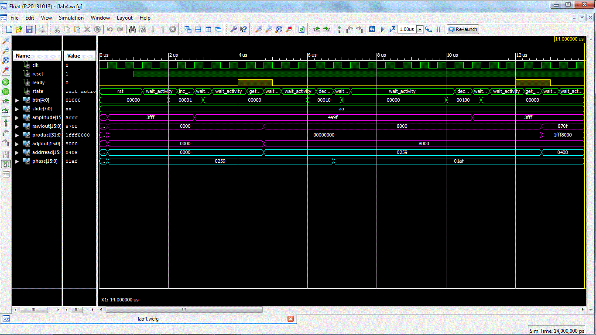

| Start date: | April 6 |
| End date: | April 12 |
| Lab: | 4 |
| Status | Not Started
|
Lab 4 - Function generation
The goal of this lab is to generate an audio waveform with a high degree
of accuracy in both its period and frequency.
Lab Overview
You are to use Direct Digital Synthesis to reproduce your audio waveform.
You may choose any waveform so long as its not
Piecewise Linear.
A few interesting examples would be sinusoids, sinc, exponentially damped
sinusoids, waveform from a musical instrument (guitar, piano, clarinet). Its
your responsibility to get the samples for this waveform. I would suggest
either deriving the waveform using a program like Python, a spreadsheet, or
digitizing the samples using your Lab3. Once you have your data, it should
be hardwired into the BRAM using the "init" statements. Please consult
the handout associated with
lesson 24 for more details
on how to accomplish this.
Requirements
While you have the flexibility to design the waveform generator as you see
fit, your system must meet the following requirements:
- Use an update rate of 48kHz
- At 440Hz, the LUT should be incremented by about 1 index.
- Be able to make between a 0.1Hz and 0.25Hz change in frequency.
- Be able to generate a full amplitude waveform.
Hardware
You will have to generate the block diagram for this assignment and
present it at the beginning of the second lab session for review by
your professor. Your design must be segregated into a datapath and
control unit - your design must show the blocks in the datapath and
the states in the FSM, the control word and the status word joining
the two.
Required Functionality
Use the slide switches and push buttons to manipulate the phase angle and the
amplitude of the waveform. The
- Pressing the left button should decrease the frequency of the waveform
by the amount set on the slide switches.
- Pressing the right button should decrease the frequency of the waveform
by the amount set on the slide switches.
The waveform should be played back through the AC97 interface - remember to
wait for the ready signal.
B-level Functionality
- Pressing the up button should increase the amplitude of the waveform
by the amount set on the slide switches.
- Pressing the down button should increase the amplitude of the waveform
by the amount set on the slide switches.
- Pressing the center button should toggle between 2-different waveforms.
A-level Functionality
Use the microBlaze to manipulate the amplitude and frequency. The user
will enter in a integer frequency and you are to produce a waveform
at that frequency.
Milestone 1
At the end of the first lab session, you should have a completed
hardware diagram drawn in paint or another image editing software
and be able to be readiable when printed onto an 8.5x11 sheet of
paper. Provide me with a hardcopy of your schematic at the end of
class. This diagram must contain the following.
- A border defining the top-level entity. Borders for each of the
components instantiated with-in the top-level entity.
- All components must be named in the upper left corner.
- All signals entering and exiting components must have their
port name defined just inside the border.
- All signals outside the components must have their width defined
as well as be labeled with their names.
Milestone 2
At the end of the second lab period you should have a working testbench.
When simulating your design, have the testbench supply a mock ready signal
in place of the ready signal generated AC97_wrapper (when put in a testbench,
the AC97 wrapper is not able to generate a ready signal without a lot of
extra work.
When complete, I expect your timing diagram to look like the following
and contain at least:
- clk
- reset
- ready (simulated using CSA statements in teshbench)
- FSM state
- BRAM address
- Phase increment
- BRAM data out
- Amplitude cofficient (if aiming for B or A functionality)
- Multiplied data out (if aiming for B or A functionality)
- Slide switches
- Button values
Your simulation needs to simulate a button press (and release) to
change the phase increment and follow-up showing that the BRAM
address is being incremented by this new value.

Grading
| Item |
Grade |
Points |
Out of |
Date |
Due |
| Milestone #1 |
On-Time ------------------------------------------------------------------ Late: 1Day ---- 2Days ---- 3Days ---- 4+Days |
|
5 |
|
End of Lesson L27 |
Milestone #2 |
On-Time ------------------------------------------------------------------ Late: 1Day ---- 2Days ---- 3Days ---- 4+Days |
|
5 |
|
End of Lesson L28 |
Required Functionality |
On-Time ------------------------------------------------------------------ Late: 1Day ---- 2Days ---- 3Days ---- 4+Days |
|
30 |
|
COB L29 |
| B Functionality |
On-Time ------------------------------------------------------------------ Late: 1Day ---- 2Days ---- 3Days ---- 4+Days |
|
10 |
|
COB L29 |
| A Functionality |
On-Time ------------------------------------------------------------------ Late: 1Day ---- 2Days ---- 3Days ---- 4+Days |
|
10 |
|
COB L29 |
| Use of Git / Bitbucket |
On-Time: 0 ---- Check Minus ---- Check ---- Check Plus ---- Late: 1Day ---- 2Days ---- 3Days ---- 4+Days |
|
5 |
|
COB L30 |
| Code Style |
On-Time: 0 ---- Check Minus ---- Check ---- Check Plus ---- Late: 1Day ---- 2Days ---- 3Days ---- 4+Days |
|
10 |
|
COB L30 |
| README |
On-Time: 0 ---- Check Minus ---- Check ---- Check Plus ---- Late: 1Day ---- 2Days ---- 3Days ---- 4+Days |
|
25 |
|
COB L30 |
| Total |
|
|
100 |
|
|